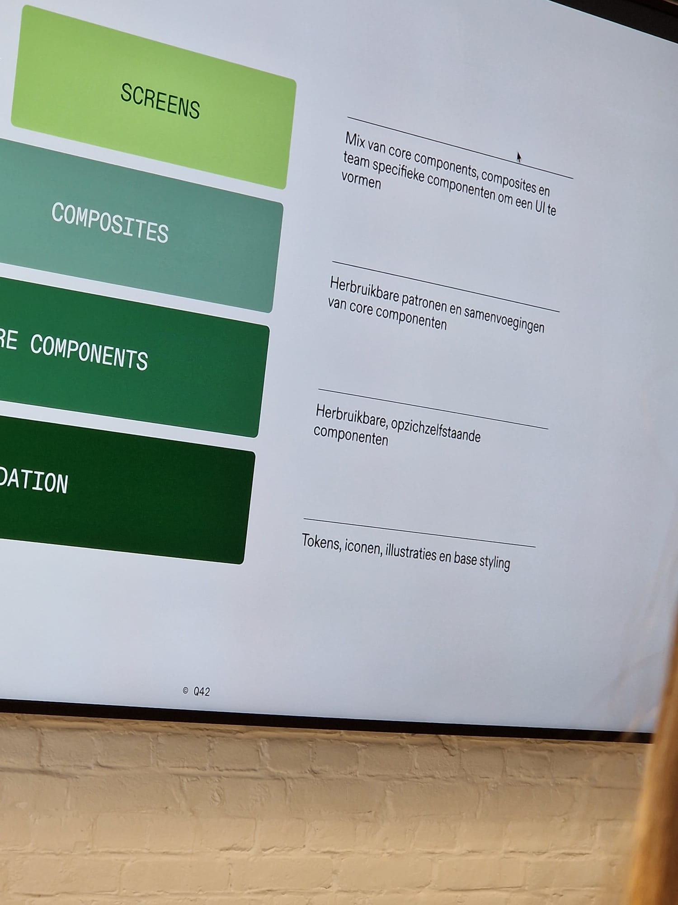

Aantekeningen tijdens het bezoek:
Q42 valt onder Edra. Een Zweeds bedrijf.
Ze doen alleen development.
Lees meer...
Q42 heeft meer dan 100 engineers en sinds kort hebben ze een tweede kantoor in Rotterdam.
Ze bouwen digitale producten.
Hun doel is om het leven van mensen slimmer, beter en leuker maken.
Om een kras op de aarde te maken (positief).
Werk voor klanten:
KLM, Hema, demol, hitster, rijksmuseum, Philips, hue, efteling
Grotere nieuwe klant is Greenchoice.
Q42 heeft een design systeem gemaakt.
Het doel van Greenchoice is: we willen dat het design systeem meer wordt gebruikt.
Hierdoor zijn ze bij Q42 gekomen.
Voordat Q42 iets konden doen, deden ze een design system assessment.
Van de ground up een framework ervoor maken.
Waar stonden we? Waar wilden we naartoe? En hoe kunnen we daar komen?
Conclusie was dat ze het niet zo goed hadden opgezet.
Q42 vragen waar willen jullie naartoe.
Opgedeeld in eigen framework voor "maturity" en vertaald naar een roadmap.
Ze zaten op level 2 en je zou naar level 5 willen (enorm veel gebruikers) (hoog niveau).
In 3 jaar willen ze 2 niveaus opstijgen.
Conclusie daaruit was laat het design systeem van nu zitten en begin opnieuw.
Two crafts, one mental model.
Zoals natuurkunde. Begint bij atoom dan molecuul dan dit dan dat.

Hierdoor kunnen we makkelijker communiceren en navigeren door het systeem, wat beheer vereenvoudigd.
Overeenstemming is het product, wat overblijft is resultaat.
Design systemen zijn geen deliverables, maar conversaties. Je moet het blijven voeten om het te laten groeien.
Je krijgt meer stakeholders en meer afhankelijkheden.
De impact is vele malen groter.
Greenchoice telt ruim 60000 consument klanten en heeft de ambitie om te groeien. En dit is dus exclusief voor zakelijke klanten.
En de governance rol wordt prominenter.
Don't re-invent the wheel
Er zijn heel veel dingen die gewoon goed werken. Niet moeilijker maken dan nodig is.
Rondleiding:
Fabriek is design ....
Q42 deel heeft de ruimte in groepen opgedeeld. Zo zitten de groepen bij elkaar en werken aan hun eigen project.